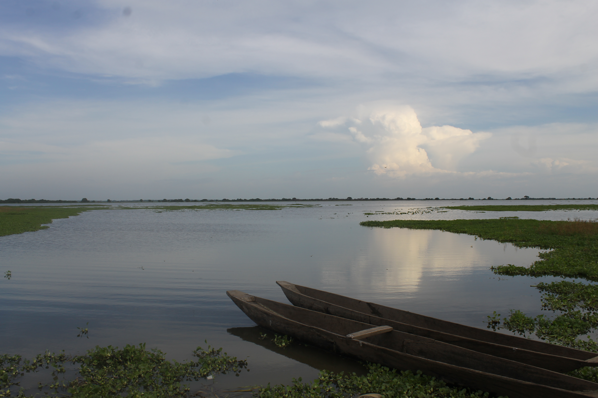
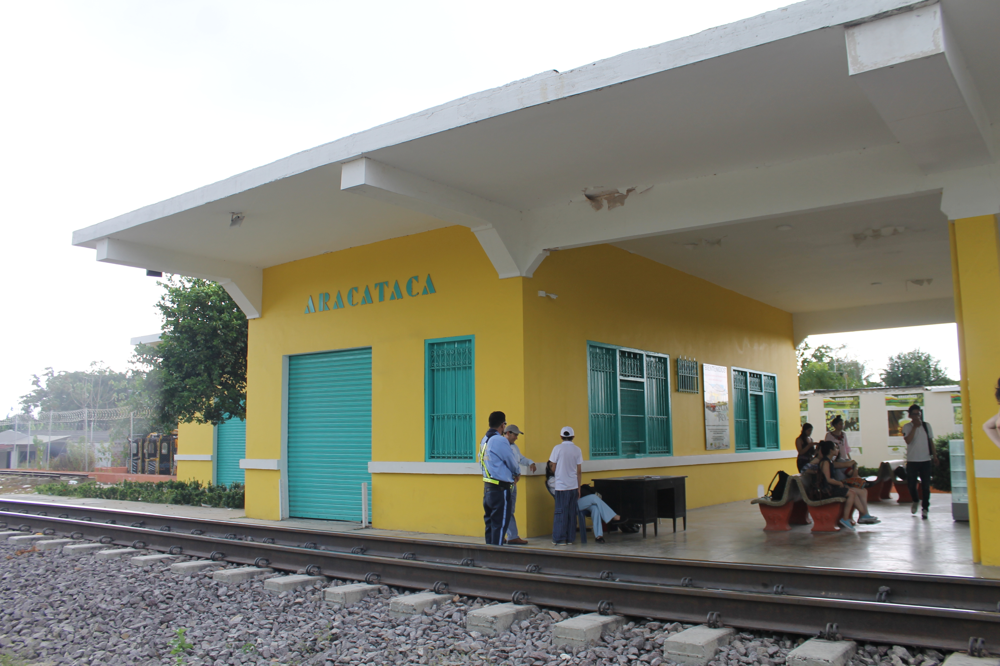
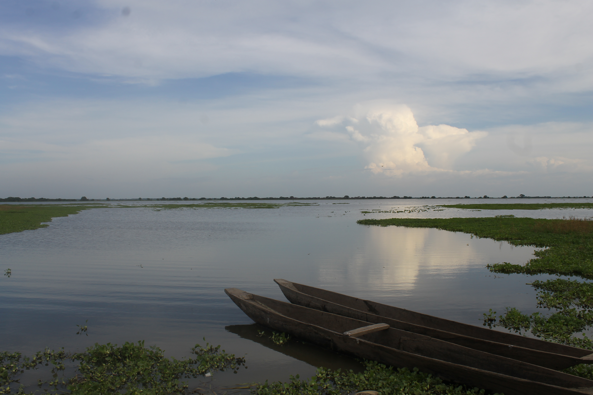
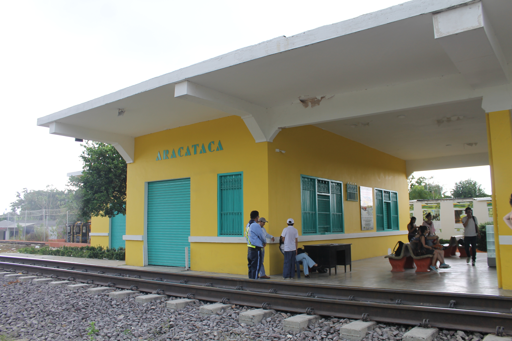

BIOGRAFÍA
A quién le interese,
Mi nombre es Cristian Giovanny Montealegre Rubiano. Actualmente tengo 24 años; nací el 15 de abril de 1998. Esto
quiere decir, según la astrología que: soy signo solar ARIES, con ascendente en LEO y la hermosa luna en
SAGITARIO.
Mis padres son Néstor Montealegre y Jenaet Rubiano, oriundos de Flandes y Bogotá. Casi que todas
mi familia por no decir que todos son de "Tierra Caliente"
Dentro de estos 24 años he realizado casi todo lo que me he propuesto cuando era un niños. Para emprezar
graduarme del colegio, no es mucho pero era un gran afán. Nunca me ha gustado éste; no es por el estudio y los
trabajos, es más por una cuestión de aun no poder realizar cosas de impacto. Aunque realice un proyeco de grado
donde por medio de las fotografías se creó una galería que tenia como el fin mostrar lo que son los adolescentes
y por qué somos incomprendidos por nuestros mayores. Fue un proyecto de impacto social mediano pero interesante
debido a que se convino la investigación como la creación de producto para ressaltar la identidad de esas
personas incomprendidas.
Luego de ello, y de terminar este ciclo educativo. Ingrese a la universidad, no precisamente a lo que desaba
pero... en el 2016, ingrese a la Licenciatura en Educación Básica con Énfasis en Humanidades y Lengua Castellan.
Recuerdo tanto que la primera clase fue Introducción a la Literatura, con un profesor genial -costeño él- y nos
dijo algo muy memorable:
Si ustedes dejan una lectura, aunque sea de una solo página, cuántas serían las páginas que deben cuando
finalicen la carrera
Nunca en mi vida me marco tanto una frase; tanto es la marca que dejó que, por lo general, logré cumpliar con
mis responsablidades con la universidad y las lecturas. Gracias a ello, he logrado entrar y líderar un Semillero
de investigación y también realizar publicaciones y participar en ponencias a nivel nacional.
Pero bueno, eso aunque no me define es una gran parte de mi. Cabe ressaltar que estoy dandome un tiempo de esta
carrera y Actualmente mirtando al desarrollo web como un herramiento de crecimiento personal, profesional
Por otro lado, para tambien me gusta mucho de la
fotografía, tengo una camara profesional que la adquiri en mi proyecto de grado; me gusta todo tipo de música
pero no todo el tiempo. Según el día y con que pie me levanté serán las caciones. Soy amante de los felinos en
general, tengo un gato desde hace 10 año.
Se llama Garfield y su nombre es por que: es anaranjado y a rayas; gordo y perezoso. Lo que lo hace diferentes
es que en vez de Lasaña le gusta el tamal.
Por cierto, soy amante del plan: caminar, explorar, museos y centro de Bogotá.


 


